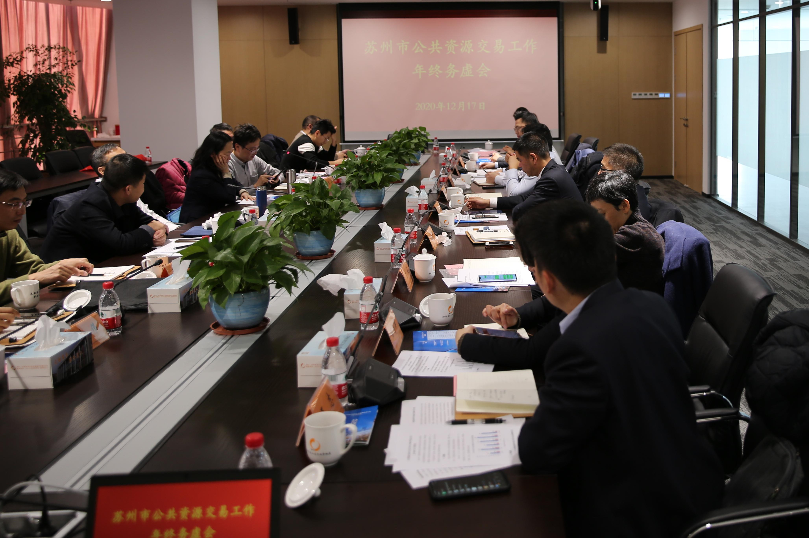
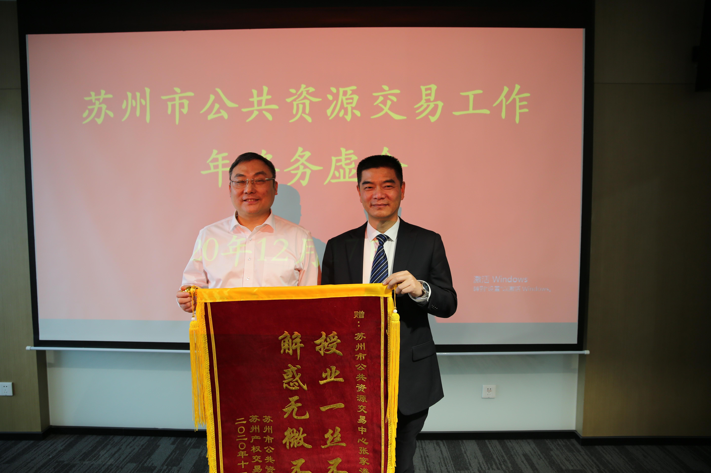
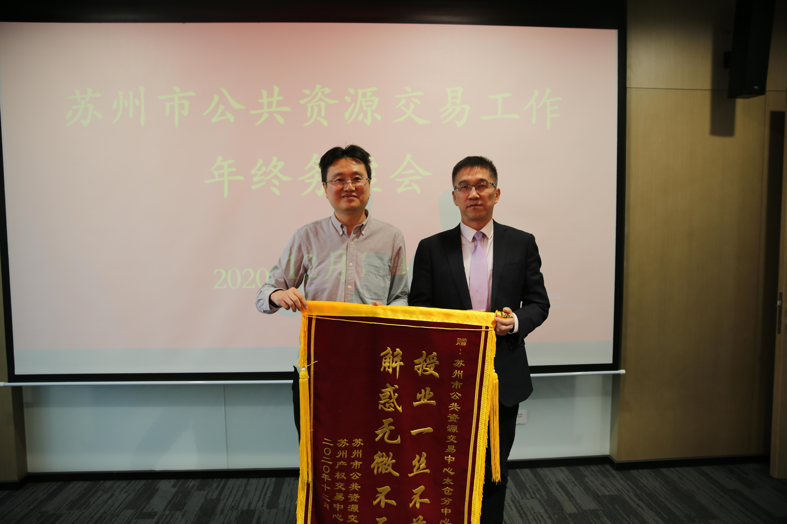
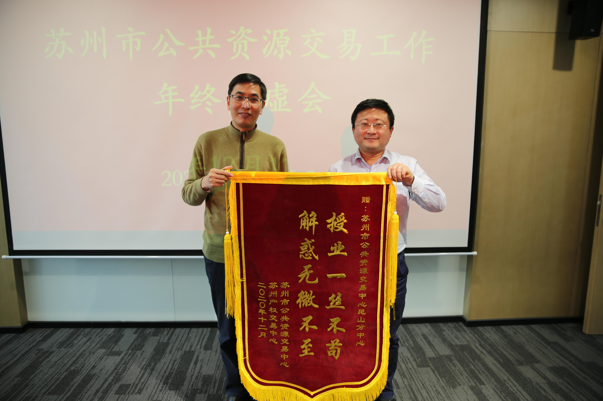

2020年全市公共资源交易工作年终务虚会在吴江召开
【信息发布时间：2020-12-18阅读次数：】 【我要打印】 【关闭】
12月17日，市行政审批局副局长张硕群带队前往吴江召开全市公共资源交易工作年终务虚会，并参观吴江区审批局政务服务大厅。

座谈会上，公管处通报了全市公共资源交易2020年工作情况和2021年工作思路，市交易中心、各部门、各分中心分别就本年工作亮点和明年工作思路做了交流发言。会议现场气氛热烈，对“不见面”、集采工作、营商环境、市县一体化建设、专家库、信息化建设、规则清理等方面，与会人员畅所欲言，各抒己见。

会上，张局长对明年工作提出以下设想和要求：一是要将立法工作作为明年的重中之重，加强与人大、司法局的沟通联系，从政府规章入手，同步立法，让公共资源交易有法可依；二是国土进场工作要积极推进，以公管办名义对各分中心国土工作提供支撑，打通堵点难点；三是要做好全市域数据汇集，市交易中心的信息化项目要从市域统筹方面着手，各分中心提出需求，各项目充分关联，同时要有更长期的项目规划；四是要充分融入长三角一体化建设这个国家战略，做好课题研究，各分中心积极参与，明确在长三角一体化战略中我市公共资源交易的目标与规划。
会后，为了表达张家港、太仓、昆山分中心对集采人员业务实操培训给予全力支持和帮助的感谢，市公共资源交易中心分别给三个分中心送上了锦旗。



市行政审批局公管处张领副处长，市公共资源交易中心副主任张彬、邵元，市交易中心相关部门负责同志，各分中心主要负责同志参加会议。